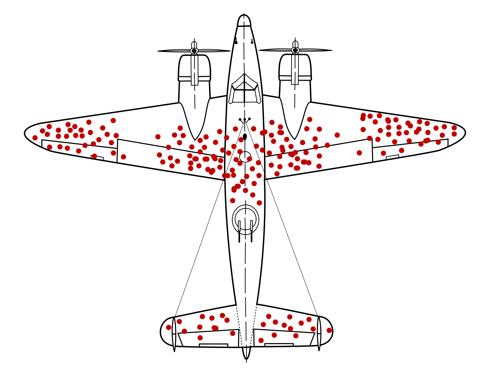
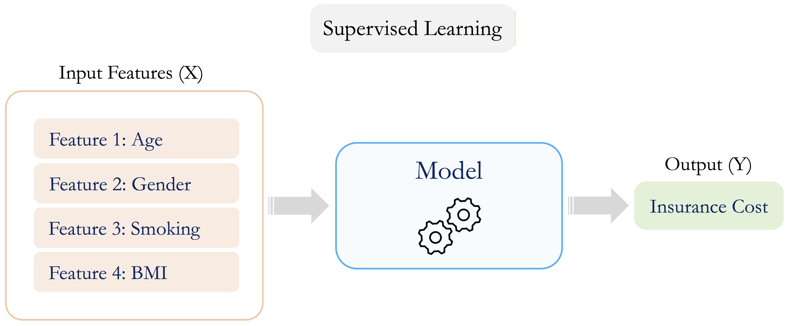

2 The Data Science Workflow and the Role of Machine Learning
The goal is to turn data into information, and information into insight.
How can a bank determine which customers are at risk of closing their accounts? How can we identify individuals who are likely to earn a high annual income, or households that are likely to subscribe to a term deposit? How can we group products, customers, or observations into meaningful segments when no labels are available? Questions such as these illustrate the challenge expressed in this chapter’s opening quote: the need to transform data into information, and information into insight. These practical problems lie at the heart of the data science tasks explored throughout this book. Behind such systems, whether predicting churn, classifying income, or clustering products, stand structured analytical processes that connect data to decisions. This chapter offers your entry point into that world by introducing the data science workflow and clarifying how machine learning fits within it, even if you have never written a line of code or studied statistics before.
Whether your background is in business, science, the humanities, or none of the above, this chapter is designed to be both accessible and practical. Through real-world examples, visual explanations, and hands-on exercises, you will explore how data science projects progress from raw data to meaningful insights, understand how modeling techniques are embedded within a broader analytical process, and see why these tools are essential in today’s data-driven world.
In today’s economy, data has become one of the world’s most valuable assets, often described as the “new oil,” for its power to fuel innovation and transform decision-making. Organizations across sectors increasingly rely on data-driven approaches to guide strategy, improve operations, and respond to complex, evolving challenges. Making effective use of data, however, requires more than technical tools alone. It demands a disciplined process for framing questions, preparing data, building models, and interpreting results in context.
As the demand for data-driven solutions continues to grow, understanding how data science projects are structured, and how machine learning supports modeling within that structure, has never been more important. This chapter introduces the core ideas that underpin modern data science practice, presents a practical workflow that guides analysis from problem formulation to deployment, and sets the conceptual foundation for the methods developed throughout the remainder of the book.
While data science encompasses a wide variety of data types, including images, video, audio, and text, this book focuses on applications involving structured, tabular data. These are datasets commonly found in spreadsheets, relational databases, and logs. More complex forms of unstructured data analysis, such as computer vision or natural language processing, lie beyond the scope of this volume.
What This Chapter Covers
This chapter lays the groundwork for your journey into data science and machine learning by introducing the Data Science Workflow that structures modern analytical projects. You will begin by exploring what data science is, why it matters across diverse fields, and how data-driven approaches transform raw data into actionable insight.
The central focus of the chapter is the Data Science Workflow: a practical, iterative framework that guides projects from problem understanding and data preparation through modeling, evaluation, and deployment. You will learn how each stage of this workflow contributes to effective analysis and how decisions made at one stage influence the others.
As the chapter progresses, you will examine the role of machine learning within this workflow, focusing on its function as the primary modeling component of data science. The chapter introduces the three main branches of machine learning, supervised, unsupervised, and reinforcement learning, and highlights the types of problems each is designed to address.
By the end of this chapter, you will have a high-level roadmap of how data science operates in practice, how machine learning methods fit within a broader analytical process, and how the chapters that follow build on this foundation to develop practical modeling and evaluation skills.
2.1 What is Data Science?
Data science is an interdisciplinary field that combines mathematics, statistics, computer science, and domain knowledge to extract insight from data and support informed decision-making (see Figure 2.1). Rather than focusing on isolated techniques, data science brings together analytical reasoning, computational tools, and contextual understanding to address complex, real-world questions.
Although the term data science is relatively recent, its foundations are rooted in long-established disciplines such as statistics, data analysis, and machine learning. What distinguishes modern data science is its scale and scope: the widespread availability of digital data, advances in computing power, and the growing demand for data-driven systems have elevated it from a collection of methods to a distinct and influential field of practice.
A central component of data science is machine learning, which provides methods for identifying patterns and making predictions based on data. While statistical techniques play a key role in summarizing data and quantifying uncertainty, machine learning enables scalable modeling approaches that adapt to complex structures and large datasets. In this book, machine learning is treated as one of the primary modeling toolkits within a broader data science process.
In applied settings, effective data science brings together several complementary capabilities. Statistical analysis and data visualization support both exploration and inference by revealing patterns, quantifying uncertainty, and guiding analytical decisions. Machine learning provides modeling tools that enable systems to learn from data, generate predictions, and adapt to complex structures. Underpinning these activities is data engineering, which ensures that data are collected, cleaned, organized, and made accessible for analysis.
These capabilities are not applied in isolation. They interact throughout the data science workflow, from early data preparation and exploratory analysis to model development, evaluation, and deployment. This workflow-based perspective guides the organization of the remainder of the chapter and forms the conceptual foundation for the structure of the book as a whole.
2.2 Why Data Science Matters
Data is no longer merely a byproduct of digital systems; it has become a central resource for innovation, strategy, and decision-making. Across organizations and institutions, decisions are increasingly made in environments characterized by large volumes of data, complex relationships, and substantial uncertainty. In such settings, intuition alone is rarely sufficient.
Modern organizations collect vast amounts of data, ranging from transactional records and digital interactions to clinical measurements and administrative logs. Yet the mere availability of data does not guarantee insight. Without appropriate analytical methods and careful interpretation, data can remain underutilized or, worse, lead to misleading conclusions. Data science addresses this challenge by providing systematic approaches for extracting patterns, generating predictions, and supporting evidence-based decisions.
The impact of data science is visible across many domains, from finance and healthcare to marketing, public policy, and scientific research. In each case, the value lies not simply in applying algorithms, but in combining data, models, and domain understanding to inform decisions with real consequences. Predictive systems influence who receives credit, which patients are flagged for early intervention, how resources are allocated, and how risks are managed.
Building reliable systems of this kind requires more than powerful models. It requires a structured, repeatable process that connects analytical techniques to well-defined questions and interpretable outcomes. This need motivates the Data Science Workflow, introduced in the next section, which provides a practical framework for guiding data science projects from initial problem formulation to actionable insight.
2.3 The Data Science Workflow
Have you ever tried analyzing a dataset without a clear sense of what question you are answering, how the data should be prepared, or how results will be evaluated? In data science, structure is essential. Without a well-defined workflow, even powerful algorithms can produce results that are misleading, irreproducible, or difficult to interpret. For this reason, data science projects are typically organized around a clear workflow. The Data Science Workflow provides a flexible yet disciplined framework for transforming messy data into actionable insight. It helps analysts align modeling choices with analytical goals, iterate thoughtfully, and ensure that re
In practice, progress through the workflow is rarely a simple one-way sequence. As new insights emerge, earlier steps often need to be revisited, for example by refining the original question, adjusting features, or retraining a model. This iterative behavior reflects how analysis evolves in response to evidence, rather than following a fixed path from start to finish.
At a conceptual level, the overall aim of this process is to transform raw data into increasingly meaningful forms of understanding. This progression is often illustrated using the DIKW Pyramid, which depicts a linear movement from Data to Information, Knowledge, and ultimately Insight (see Figure 2.2).

A widely used framework for structuring data science projects is CRISP-DM (Cross-Industry Standard Process for Data Mining) (2000). Inspired by this framework, we use seven interconnected phases in this book (see Figure 2.3):
Problem Understanding: Define the research or business goal and clarify what success looks like.
Data Preparation: Gather, clean, and format data for analysis.
Exploratory Data Analysis (EDA): Use summaries and visualizations to understand distributions, spot patterns, and identify potential issues.
Data Setup for Modeling: Engineer features, encode categorical variables, rescale predictors when needed, and partition the data.
Modeling: Apply machine learning or statistical models to uncover patterns and generate predictions.
Evaluation: Assess how well the model performs using appropriate metrics and validation procedures.
Deployment: Integrate the model into real-world systems and monitor it over time.

A useful illustration of this workflow in practice comes from the Harvard Study of Adult Development, one of the longest-running research projects in the social sciences. For more than eighty years, researchers have followed several generations of participants to answer a fundamental question: What makes a good and fulfilling life? Each new wave of data required clear problem formulation, careful planning of measurements, integration of historical and newly collected data, and exploratory and statistical analyses to uncover emerging patterns.
As highlighted in Robert Waldinger’s widely viewed TED talk, the study’s most robust finding is that strong, supportive relationships are among the most reliable predictors of long-term health and happiness. This example illustrates that the value of data science lies not only in sophisticated models, but also in the disciplined process that connects meaningful questions with carefully prepared data and rigorous analysis.
This book is structured around the Data Science Workflow. Each chapter corresponds to one or more stages in this process, guiding you step by step from problem understanding to deployment. By working through the workflow, you will not only learn individual techniques, but also develop the process-oriented mindset required for effective and reproducible data science practice.
In the remainder of this chapter, we walk through each stage of the Data Science Workflow, beginning with problem understanding and moving through data preparation, modeling, and evaluation, to clarify how these steps connect and why each is essential for building effective, data-driven solutions.
2.4 Problem Understanding
Every data science project begins not with code or data, but with a clearly formulated question. Defining the problem precisely sets the direction for the entire workflow: it clarifies objectives, determines what information is needed, and shapes how results will be interpreted. Whether the goal is to test a scientific hypothesis, improve business operations, or support decision-making, progress depends on understanding the problem and aligning it with stakeholder needs. This first stage of the Data Science Workflow ensures that analytical efforts address meaningful goals and lead to actionable outcomes.
A well-known example from World War II illustrates the importance of effective problem framing: the case of Abraham Wald and the missing bullet holes. During the war, the U.S. military analyzed returning aircraft to determine which areas were most damaged. Bullet holes appeared primarily on the fuselage and wings, with relatively few observed in the engines. Figure 2.4 illustrates this pattern, summarized in Table 2.1.

| Section.of.plane | Bullet.holes.per.square.foot |
|---|---|
| Engine | 1.11 |
| Fuselage | 1.73 |
| Fuel system | 1.55 |
| Rest of plane | 0.31 |
Initial recommendations focused on reinforcing the most visibly damaged areas. However, Wald recognized that the data reflected only the planes that survived. The engines, where little damage was observed, were likely the areas where hits caused aircraft to be lost. His insight was to reinforce the areas with no bullet holes. This example highlights a central principle in data science: the most informative signals may lie in what is missing or unobserved. Without careful problem framing, even high-quality data can lead to flawed conclusions.
In practice, problem understanding rarely begins with a cleanly defined question. Real-world data science projects often start with vague goals, competing priorities, or incomplete information. Analysts must work closely with stakeholders to clarify objectives, define success criteria, and determine how data can meaningfully contribute. The ability to frame problems thoughtfully is therefore one of the most important skills of a data scientist.
A useful starting point is to ask a small set of guiding questions:
- Why is this question important?
- What outcome or impact is desired?
- How can data science contribute meaningfully?
Focusing on these questions helps ensure that analytical work is aligned with real needs rather than technical curiosity alone. For example, building a model to predict customer churn becomes valuable only when linked to concrete goals, such as designing retention strategies or estimating financial risk. The way a problem is framed influences what data is collected, which models are appropriate, and how performance is evaluated.
Once the problem is well understood, the next challenge is translating it into a form that can be addressed with data. This translation is rarely straightforward and often requires both domain expertise and analytical judgment. A structured approach can help bridge this gap:
Clearly articulate the project objectives in terms of the underlying research or business goals.
Break down these objectives into specific questions and measurable outcomes.
Translate the objectives into a data science problem that can be addressed using analytical or modeling techniques.
Outline a preliminary strategy for data collection, analysis, and evaluation.
A well-scoped, data-aligned problem provides the foundation for all subsequent steps in the workflow. The next stage focuses on preparing the data to support this goal.
Practice: Consider a situation in which an organization wants to “use data science” to address a problem, such as reducing customer churn, improving student success, or detecting unusual transactions. Before thinking about data or models, ask yourself: (1) What decision is being supported? (2) What would define success? (3) What information would be needed to evaluate that success?
2.5 Data Preparation
With a clear understanding of the problem and its connection to data, the next step in the workflow is preparing the dataset for analysis. Data preparation ensures that the data used for exploration and modeling are accurate, consistent, and structured in a way that supports reliable inference. In practice, raw data, whether obtained from databases, spreadsheets, APIs, or web scraping, often contains issues such as missing values, outliers, duplicated records, and incompatible variable types. If left unaddressed, these issues can distort summaries, bias model estimates, or obscure important relationships.
Data preparation typically involves a combination of tasks aimed at improving data quality and usability. Common activities include integrating data from multiple sources, handling missing values through deletion or imputation, identifying and assessing outliers, resolving inconsistencies in formats or categories, and transforming variables through feature engineering. Throughout this process, careful inspection and summarization of the data are essential to verify variable types, distributions, and structural integrity.
Although often time-consuming, data preparation provides the foundation for accurate, interpretable, and reproducible analysis. Decisions made at this stage directly influence model performance, evaluation results, and the risk of unintended biases or data leakage. For this reason, data preparation is not a preliminary formality but a central component of the data science workflow. In Chapter 3, we examine these techniques in detail, using real-world datasets to illustrate their practical importance.
2.6 Exploratory Data Analysis (EDA)
Before relying on models to make predictions, it is essential to understand what the data itself reveals. Exploratory Data Analysis (EDA) is the stage of the data science workflow in which analysts systematically examine data to develop an informed view of its structure, quality, and key relationships. Decisions made during this stage strongly influence subsequent modeling and evaluation.
EDA serves two complementary purposes. First, it has a diagnostic role, helping to identify issues such as missing values, outliers, or inconsistent entries that could compromise later analyses. Second, it plays an exploratory role by revealing patterns, trends, and associations that guide feature engineering, model selection, and hypothesis refinement.
Common EDA techniques include the use of summary statistics to describe the distribution of numerical variables, graphical methods such as histograms, scatter plots, and box plots to visualize patterns and anomalies, and correlation analysis to assess relationships between variables. Together, these tools support both data quality assessment and analytical decision-making. For example, a highly skewed variable may suggest the need for transformation, while strong correlations may indicate redundancy or opportunities for dimensionality reduction.
In R, EDA typically begins with functions that summarize data structure and basic distributions, complemented by visualization tools for deeper inspection. The ggplot2 package provides a flexible framework for creating diagnostic and exploratory graphics. These techniques are explored in detail in Chapter 4, where real-world datasets are used to demonstrate how EDA informs effective modeling, evaluation, and communication.
2.7 Data Setup for Modeling
After gaining a clear understanding of the data through exploratory analysis, the next step is to prepare it specifically for modeling. This stage bridges exploration and prediction by shaping the dataset into a form that learning algorithms can use effectively. Decisions made here directly influence model performance, interpretability, and the validity of evaluation results.
Data setup for modeling typically involves several closely related tasks. Feature engineering focuses on transforming existing variables or creating new ones that better capture information relevant to the modeling objective, for example by encoding categorical variables numerically or applying transformations to address skewness. Feature selection aims to identify the most informative predictors while removing redundant or irrelevant variables, helping to reduce overfitting and improve interpretability.
Preparing data for modeling also requires ensuring that variables are on appropriate scales. Rescaling methods such as Z-score standardization or min–max scaling are particularly important for algorithms that rely on distances or gradients, including k-nearest neighbors and support vector machines. In addition, datasets are commonly partitioned into training, validation, and test sets. This separation supports model fitting, hyperparameter tuning, and unbiased performance assessment on unseen data.
Although sometimes treated as a one-time step, data setup for modeling is often iterative. Insights gained during modeling or evaluation may require revisiting earlier choices, such as adjusting feature transformations or revising the predictor set. By the end of this stage, the dataset should be structured to support reliable, interpretable, and well-validated models. These techniques are explored in depth in Chapter 6, where applied examples and reproducible R code illustrate their practical implementation.
2.8 Modeling
Modeling is the stage of the data science workflow where statistical and machine learning techniques are applied to prepared data to uncover patterns, make predictions, or describe structure. The objective is to translate insights gained during earlier stages, particularly data preparation and exploratory analysis, into formal models that can generalize to new, unseen data. This stage brings together theoretical concepts and practical considerations, as analytical choices begin to directly shape predictive performance and interpretability.
Modeling typically involves several interconnected activities. An appropriate algorithm must first be selected based on the nature of the task, such as regression, classification, or clustering, as well as the structure of the data and the broader analytical goals. The chosen model is then trained on the training data to learn relationships between predictors and outcomes. In many cases, this process is accompanied by hyperparameter tuning, where model settings are adjusted using procedures such as grid search, random search, or cross-validation to improve performance.
The choice of model involves trade-offs among interpretability, computational efficiency, robustness, and predictive accuracy. In this book, we introduce a range of widely used modeling approaches, including linear regression (Chapter 10), k-Nearest Neighbors (Chapter 7), Naïve Bayes classifiers (Chapter 9), decision trees and random forests (Chapter 11), and neural networks (Chapter 12). In practice, multiple models are often compared to identify solutions that balance predictive performance with interpretability and operational constraints.
Modeling is closely linked to evaluation. Once models are trained, their performance must be assessed to determine how well they generalize and whether they meet the original analytical objectives. The next section focuses on model evaluation, where appropriate metrics and validation strategies are introduced.
2.9 Evaluation
Once a model has been trained, the next step is to evaluate its performance. Evaluation plays a central role in determining whether a model generalizes to new data, aligns with the original analytical objectives, and supports reliable decision-making. Without careful evaluation, even models that appear accurate on training data may perform poorly or unpredictably in practice.
The criteria used to evaluate a model depend on the type of task and the consequences of different types of error. In classification problems, simple accuracy can be informative, but it may be misleading when classes are imbalanced or when certain errors are more costly than others. In such cases, metrics that distinguish between different error types, such as precision, recall, or their combined measures, provide more meaningful insight. For regression tasks, evaluation focuses on how closely predicted values match observed outcomes, using error-based measures and summary statistics that reflect predictive accuracy and explanatory power.
Evaluation extends beyond numerical metrics. Diagnostic tools help identify systematic weaknesses in a model and guide improvement. For example, confusion matrices can reveal which classes are most frequently misclassified, while residual plots in regression models may expose patterns that suggest model misspecification or missing predictors.
To obtain reliable estimates of performance and reduce the risk of overfitting, evaluation typically relies on validation strategies such as cross-validation. These approaches assess model performance across multiple data splits, providing a more robust picture of how a model is likely to perform on unseen data.
When evaluation indicates that performance falls short of expectations, it informs the next steps in the workflow. Analysts may revisit feature engineering, adjust model settings, address data imbalance, or reconsider the original problem formulation. If evaluation confirms that a model meets its objectives, attention can then shift to deployment, where the model is integrated into real-world decision-making processes. Detailed evaluation methods, metrics, and diagnostic tools are examined in Chapter 8.
2.10 Deployment
Once a model has been rigorously evaluated and shown to meet project objectives, the final stage of the Data Science Workflow is deployment. Deployment involves integrating the model into a real-world context where it can support decisions, generate predictions, or contribute to automated processes. This is the point at which analytical work begins to deliver tangible value.
Models can be deployed in a variety of settings, ranging from real-time systems embedded in software applications to batch-processing pipelines or decision-support tools connected to enterprise databases. In professional environments, deployment typically requires collaboration among data scientists, software engineers, and IT specialists to ensure that systems are reliable, secure, and scalable.
Deployment does not mark the end of a data science project. Once a model is in use, ongoing monitoring is essential to ensure that performance remains stable over time. As new data become available, the statistical properties of inputs or outcomes may change, a phenomenon known as concept drift. Shifts in user behavior, market conditions, or external constraints can all reduce the relevance of patterns learned during training, leading to performance degradation if models are not regularly reviewed and updated.
A robust deployment strategy therefore considers not only predictive accuracy, but also practical concerns such as scalability, interpretability, and maintainability. Models should be able to handle changing data volumes, produce outputs that can be explained to stakeholders, and be updated or audited efficiently as conditions evolve. In some cases, deployment may take simpler forms, such as producing forecasts, dashboards, or reproducible analytical reports created using R Markdown (see Section 1.17), but the underlying objective remains the same: to translate analytical insight into informed action.
Although deployment is a critical component of the data science lifecycle, it is not the primary focus of this book. The emphasis in the chapters that follow is on machine learning in practice: understanding how models are constructed, evaluated, and interpreted within the broader data science workflow. The next section introduces machine learning as the core engine of intelligent systems and sets the stage for the modeling techniques explored throughout the remainder of the book.
2.11 Introduction to Machine Learning
Machine learning is one of the most dynamic and influential areas of data science. It enables systems to identify patterns and make predictions from data without relying on manually specified rules for every possible scenario. As data has become increasingly abundant, machine learning has provided scalable methods for turning information into actionable insight. While traditional data analysis often focuses on describing what has happened, machine learning extends this perspective by supporting predictions about what may happen next. These capabilities underpin a wide range of applications, from recommendation systems and fraud detection to medical diagnostics and autonomous technologies.
At its core, machine learning is a subfield of artificial intelligence (AI) concerned with developing algorithms that learn from data and generalize to new, unseen cases. Although all machine learning systems fall under the broader umbrella of AI, not all AI approaches rely on learning from data; some are based on predefined rules or logical reasoning. What distinguishes machine learning is its ability to improve performance through experience, making it particularly effective in complex or rapidly changing environments where static rules are insufficient.
A common illustration is spam detection. Rather than specifying explicit rules to identify unwanted messages, a machine learning model is trained on a labeled dataset of emails. From these examples, it learns statistical patterns that distinguish spam from legitimate messages and applies this knowledge to new inputs. This capacity to learn from data and adapt over time is what allows machine learning systems to evolve as conditions change.
Within the Data Science Workflow introduced earlier (Figure 2.3), machine learning is primarily applied during the modeling stage. After the problem has been defined and the data have been prepared and explored, machine learning methods are used to construct predictive or descriptive models. This book emphasizes the practical application of these methods, focusing on how models are built, evaluated, and interpreted to support data-informed decisions (Chapters 7 through 13).
As illustrated in Figure 2.5, machine learning methods are commonly grouped into three broad categories: supervised learning, unsupervised learning, and reinforcement learning. These categories differ in how models learn from data and in the types of problems they are designed to address. Table 2.2 summarizes the main distinctions in terms of input data, learning objectives, and example applications. In this book, the focus is primarily on supervised and unsupervised learning, as these approaches are most relevant for practical problems involving structured, tabular data. In the subsections that follow, we introduce each of the three main branches of machine learning, beginning with supervised learning, the most widely used and foundational approach.

| Learning.Type | Input.Data | Goal | Example.Application |
|---|---|---|---|
| Supervised | Labeled (X, Y) | Learn a mapping from inputs to outputs | Spam detection, disease diagnosis |
| Unsupervised | Unlabeled (X) | Discover hidden patterns or structure | Customer segmentation, anomaly detection |
| Reinforcement | Agent + Environment | Learn optimal actions through feedback | Game playing, robotic control |
2.11.1 Supervised Learning
Supervised learning refers to situations in which models are trained on labeled data, meaning that each observation includes both input variables and a known outcome. Consider a customer churn scenario using a dataset such as churnCredit. Historical records describe customers through variables such as account usage, age, and service interactions, alongside a label indicating whether the customer eventually left the company. The goal is to learn from these examples in order to predict whether a current customer is likely to churn. This type of prediction task is characteristic of supervised learning.
More generally, supervised learning involves training a model on a dataset where each observation consists of input variables (features) and a corresponding outcome (label). The model learns a relationship between the inputs, often denoted as \(X\), and the output \(Y\), with the aim of making accurate predictions for new, unseen data. This learning process is illustrated in Figure 2.6.

Supervised learning problems are commonly divided into two categories: classification and regression. In classification tasks, the model assigns observations to discrete classes, for example, identifying spam emails or determining whether a tumor is benign or malignant. In regression tasks, the model predicts continuous outcomes, such as insurance costs, housing prices, or future product demand.
Supervised learning underpins many systems encountered in everyday life, including recommendation engines, credit scoring tools, and automated medical diagnostics. In this book, we introduce several widely used supervised learning techniques, including k-Nearest Neighbors (Chapter 7), Naïve Bayes classifiers (Chapter 9), decision trees and random forests (Chapter 11), and regression models (Chapter 10). These chapters provide hands-on examples showing how such models are implemented, evaluated, and interpreted in practical applications.
2.11.2 Unsupervised Learning
How can meaningful structure be identified in data when no outcomes are specified? This question lies at the heart of unsupervised learning, which focuses on analyzing datasets without predefined labels in order to uncover hidden patterns, natural groupings, or internal structure. Unlike supervised learning, which is guided by known outcomes, unsupervised learning is primarily exploratory, aiming to reveal how data are organized without a specific prediction target.
Among unsupervised methods, clustering is one of the most widely used and practically valuable techniques. Clustering groups similar observations based on shared characteristics, providing insight when labels are unavailable. For example, an online retailer may use clustering to segment customers based on purchasing behavior and browsing patterns. The resulting groups can reflect distinct customer profiles, such as frequent purchasers, occasional buyers, or high-value customers, helping the organization better understand variation within its customer base.
By revealing structure that may not be apparent from summary statistics alone, clustering supports data-driven exploration and decision-making. It is particularly useful when labels are unavailable, costly to obtain, or when the goal is to understand the data before applying predictive models. We return to clustering in Chapter 13, where these methods are examined in detail using real-world datasets for segmentation, anomaly detection, and pattern discovery.
2.11.3 Reinforcement Learning
How can an agent learn to make effective decisions through trial and error? This question lies at the core of reinforcement learning, a branch of machine learning in which an agent interacts with an environment, receives feedback in the form of rewards or penalties, and uses this feedback to improve its behavior over time. Unlike supervised learning, which relies on labeled data, and unsupervised learning, which seeks structure in unlabeled data, reinforcement learning is driven by experience gained through sequential actions.
The central objective in reinforcement learning is to learn an optimal policy: a strategy that specifies which action to take in each state in order to maximize expected cumulative reward. This framework is particularly well suited to settings in which decisions are interdependent and the consequences of actions may only become apparent after a delay.
Reinforcement learning has led to major advances in areas such as robotics, where agents learn to navigate and manipulate physical environments, and game-playing systems, where models develop successful strategies through repeated interaction. It is also increasingly used in dynamic decision problems involving adaptive control, such as pricing, inventory management, and personalized recommendation systems.
Although reinforcement learning is a powerful and rapidly evolving area of machine learning, it lies outside the scope of this book. The focus here is on supervised and unsupervised learning methods, which are more directly applicable to problems involving structured, tabular data and predictive modeling. Readers interested in reinforcement learning are referred to Reinforcement Learning: An Introduction by Sutton and Barto (Sutton, Barto, et al. 1998) for a comprehensive treatment of the topic.
2.12 Chapter Summary and Takeaways
This chapter introduced the foundational concepts that define data science and its close connection to machine learning. Data science was presented as an interdisciplinary field that transforms raw data into actionable insight by combining statistical reasoning, computational tools, and domain knowledge. Through real-world examples, the chapter illustrated the growing relevance of data-driven thinking across domains such as healthcare, finance, and the social sciences.
A central theme of the chapter was the Data Science Workflow: a structured yet inherently iterative framework that guides projects from problem formulation through data preparation, modeling, evaluation, and deployment. This workflow serves as the conceptual backbone of the book, providing a unifying perspective that helps place individual methods and techniques within a coherent end-to-end process.
The chapter also examined machine learning as the primary engine behind modern predictive and analytical systems. Supervised learning was introduced as a framework for learning from labeled data, unsupervised learning as a means of discovering structure in unlabeled datasets, and reinforcement learning as an approach in which agents improve through feedback and interaction. Comparing these paradigms clarified their inputs, objectives, and typical areas of application.
Key takeaways from this chapter are as follows:
Data science extends beyond data itself: it requires clear questions, thoughtful problem formulation, and careful interpretation of results.
The workflow provides structure and coherence: meaningful progress arises from iteration across stages rather than from isolated analytical steps.
Machine learning enables prediction and automation: but its effectiveness depends on being embedded within a well-defined, goal-driven workflow.
In the next chapter, the focus shifts to data preparation, which in practice forms the foundation of most data science projects. You will learn how to clean, structure, and transform raw data into a form suitable for exploration, modeling, and informed decision-making.
2.13 Exercises
The exercises below reinforce the core ideas of this chapter, progressing from conceptual understanding to applied reasoning, ethical considerations, and reflection. They are designed to help you consolidate your understanding of the Data Science Workflow and the role of machine learning within it, and to encourage critical thinking about real-world data science practice.
Define data science in your own words. What characteristics make it an interdisciplinary field?
How does machine learning differ from traditional rule-based programming?
Why is domain knowledge essential in a data science project? Illustrate your answer with an example.
What is the difference between data and information? How does the DIKW Pyramid illustrate this transformation?
How is machine learning related to artificial intelligence? In what ways do these concepts differ?
Why is the Problem Understanding phase critical to the success of a data science project?
The Data Science Workflow is inspired by the CRISP-DM model. What does CRISP-DM stand for, and what are its main stages?
Identify two alternative methodologies to CRISP-DM that are used in data science practice. Briefly describe how they differ in emphasis.
What are the primary objectives of the Data Preparation stage, and why does it often consume a substantial portion of project time?
List common data quality issues that must be addressed before modeling can proceed effectively.
-
For each of the following scenarios, identify the most relevant stage of the Data Science Workflow and briefly justify your choice:
- A financial institution is developing a system to detect fraudulent credit card transactions.
- A city government is analyzing traffic sensor data to optimize stoplight schedules.
- A university is building a model to predict which students are at risk of dropping out.
- A social media platform is clustering users based on their interaction patterns.
Provide an example of how exploratory data analysis (EDA) can influence feature engineering or model selection.
What is feature engineering? Give two examples of engineered features drawn from real-world datasets.
Why is it important to split data into training, validation, and test sets? What is the role of each split?
How would you approach handling missing data in a dataset that contains both numerical and categorical variables?
-
For each task below, classify it as supervised or unsupervised learning, and suggest an appropriate class of algorithms:
- Predicting housing prices based on square footage and location.
- Grouping customers based on purchasing behavior.
- Classifying tumors as benign or malignant.
- Discovering topic clusters in a large collection of news articles.
Provide an example in which classification is more appropriate than regression, and another in which regression is preferable. Explain your reasoning.
What trade-offs arise between interpretability and predictive performance in machine learning models?
List three practices that data scientists can adopt to reduce algorithmic bias and promote fairness in predictive models.
Broader Reflections and Ethics
To what extent can data science workflows be automated? What risks may arise from excessive automation?
Describe a real-world application in which machine learning has contributed to a positive societal impact.
Describe a real-world example in which the use of machine learning led to controversy or harm. What could have been done differently?
How do ethics, transparency, and explainability influence public trust in machine learning systems?
Reflect on your own learning: which aspect of data science or machine learning are you most interested in exploring further, and why?